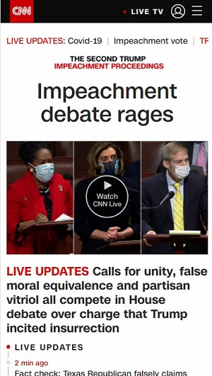
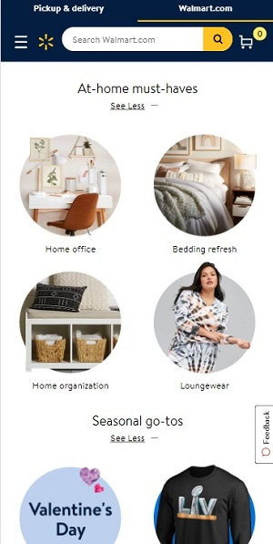
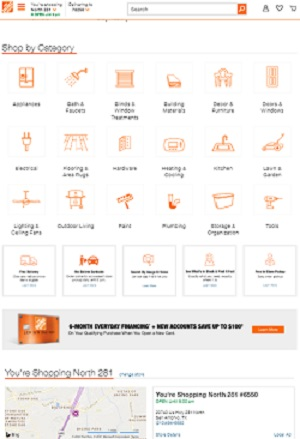

Design Principles Document
Miguel Garcia
Visual Hierarchy
CNN
The CNN website here is showing visual heirarchy. The headline "Impeachment debate rages" is what draws first attention, then the video and its headline. the 3rd attention graber is the line that is smaller than the others but still gives important information on the article "THE SECOND TRUMP IMPEACHMENT PROCEEDINGS". Though this line is smaller it still grabs attention by using capital letters and red lettering.
Law of Proximity
Walmart
Walmart website uses Law of Proximity well. The topic line "At-home must-haves" have links that are grouped together and appear as the whole. The website continues the Law of Proximity on the other topic lines. Each topic goes together well to complete and give an appealing view.
Hicks Law
The Home Depot
This Home Depot website displays Hicks Law by helping to direct choices by categorizing links and each link leading to category with filtering of choices to guide a user more easily to what is being sought. This seems to be popular among websites that have many items to sell.